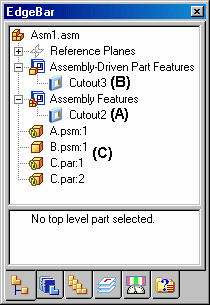
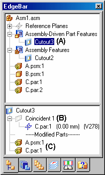

Assembly-based features
In some assemblies, you may want to construct a single feature that modifies more than one part. For example, a pattern of cutouts may extend through several parts.

In other cases, you may want to construct a feature within the context of the assembly, rather than in the Part or Sheet Metal document.
You can use the feature commands in the Assembly environment to construct features such as Cutouts, Revolved Cutouts, Holes, Chamfers, and Threads. You can also mirror and pattern these features.
In Solid Edge, you can construct three types of Assembly-Based Features:
-
Assembly Features
-
Assembly-Driven Part Features
-
Part Features
You use the Feature Options dialog box to specify whether the Assembly-Based Feature you are constructing affects only the selected parts (Assembly Feature), or affects all parts with the same document names as the selected parts (Assembly-Driven Part Feature). Part features are the same as features created using in-place activation and reside in the part document.
The Feature Options dialog box is not available until you set the Assembly-Driven Part Feature option on the Inter-Part tab of the Options dialog box. When this option is disabled, you can only construct assembly features.
Assembly Features
When you set the Create Assembly Features option, the feature affects only the parts you select.
For profile-based features, the reference plane, profile, extent definition, and surface geometry resides in and can only be viewed from the assembly document where the feature was constructed.
This option is useful when you want to modify one or more commonly-used parts, but do not want to affect other instances of the same parts in the active assembly or other assemblies that reference those parts.
You do not need write access to the affected part files to construct an Assembly Feature.
Assembly-Driven Part Features
When you set the Create Assembly-Driven Part Features option, the feature affects all parts with the same document name as the selected parts.
The reference plane, profile, and extent definition, resides in and can only be viewed from the assembly document where the feature was constructed. The surface geometry resides in the part documents. The surface geometry can be viewed in the part documents, and any other assemblies that reference the part documents.
This option is useful when you want to globally modify one or more parts while working in the assembly.
You need write access to the affected part files to construct an Assembly-Driven Part Feature.
A part document that contains an Assembly-Driven Part Feature is associatively linked to the assembly document where the feature definition (reference plane, profile, and extent definition) resides.
You can break the links that control an Assembly-Driven Part Feature by in-place activating the part document, selecting the feature in PathFinder, and clicking the Break Links command on the shortcut menu. After the link is broken, it is likely that some aspects of the feature will become undefined. For example, the reference plane may no longer be associated to its parent face. You can repair the broken links by selecting the feature, and using the Edit Definition option on the command bar to redefine the reference plane, feature extents, and so forth.
When you set the Assembly-Driven Part Feature option on the Feature Options dialog box, any existing assembly features are temporarily hidden while constructing the Assembly-Driven Part Feature. This prevents you from using edges on Assembly-Driven Part Features to construct the assembly feature.
When you finish constructing the Assembly-Driven Part Feature, the assembly features are redisplayed.
Part Features
When you set the Create Part Features option, the feature affects all parts with the same document name as the selected parts.
Part features are the same as features created using in-place activation and reside in the part document, and becomes an ordered feature. The feature is not linked and is not associative.
This option is useful when you want to globally modify one or more parts while working in the assembly.
You need write access to the affected part files to construct a part feature.
Part features created ordered geometry unless specified. There are two options for creating synchronous geometry if possible when creating Part features.
-
Cuts, holes and revolved cuts
-
Treatments (rounds and chamfers)
Synchronous geometry is non-associative and does not contain inter-part links.
Drawing the Profile
When constructing a profile-based assembly feature, you can draw the profile on one of the default assembly reference planes or use a part face to define a profile plane.
You can use the draw commands to draw the profile, or if you have created an assembly sketch, you can use the Select From Sketch option available when constructing a cutout or revolved cutout. The Text Profile command is not available when creating assembly features or Assembly-Driven Part Features.
Dimensioning the Profile
You place dimensions to the profile elements in the same way as you would a profile-based features for a part. Before you can place dimensions or geometric relationships to part edges, you must set the Peer Edge Locate command on the Tools tab. You can then place dimensions or relationships between the assembly feature profile elements and the edges of other parts in the assembly.
Defining the Extent
You can specify that the feature extends through all the parts, extends by a finite distance value, or define a from/to extent. When defining a from/to extent, you can select an assembly reference plane or a part face to define the feature extent. Associative links are created when you select a reference plane or part face to define the extent, and the links are displayed in the bottom pane of PathFinder when the feature is selected.
Selecting the Parts
You do not have to apply the feature to every part that the profile geometry passes through. The Select Parts step allows you to specify which parts you want to modify. Parts that lie within the range of the profile and the feature extent are automatically selected. You can add parts to the select set by clicking on the part you want to add, and you can deselect parts by holding the SHIFT key and selecting parts that are highlighted.
You can select a subassembly as the select set of parts to modify, and all parts that intersect the feature are modified. If parts are added to the subassembly later, the new parts are not added to the feature scope. If you want the new parts to participate in the feature, you must edit the feature and return to the Select Parts step and select the new parts to which you want to apply the feature.
Creating assembly features in multi-body parts
When creating an assembly feature in a part or sheet metal files containing multi-bodies, the assembly feature can act on one or more of the design bodies within the part or sheet metal document. See the help topic Activate Assembly Body command.
Assembly-based Features in PathFinder
Separate lists are maintained for assembly features (A) and Assembly-Driven Part Features (B) in PathFinder. When constructing Assembly-Driven Part Features, the symbols for the affected parts (C) are changed to show they have links to the assembly.

When you select an Assembly-Based Feature in the top pane of PathFinder, the parents that control the feature are displayed in the bottom pane of PathFinder. For example, when you select Cutout3 (A) in the top pane, in the bottom pane it shows that C.PAR is the parent part for the coincident reference plane on which the profile was constructed. Also listed are the parts (C) that were modified by the feature.

Editing Assembly-based Features
To edit an Assembly-Based Feature, select the feature entry in PathFinder and click the Edit Definition button on the command bar. The command bar for the feature is displayed, so you can select the step you want to modify. For example, you can return to the Select Parts step and select additional parts to which you want to apply the feature.
The Select Feature Components command on the PathFinder shortcut menu can be used to select the parent components for an assembly feature. This can be useful in determining the parent components for the feature, and for managing the component display. For example, after you select the parent components, you can use the Show, Show Only, and Hide commands to display or hide the parent components for editing purposes.
Opening Part Documents with Assembly-Driven Part Features
When you open a part document that contains an Assembly-Driven Part Feature, a dialog box reminds you that the part document has links to the assembly where the feature was constructed. The dialog box allows you to specify whether you want to open the assembly document or the part document.
Mirroring and Patterning Assembly Features
You can Mirror and Pattern only Assembly Features that were constructed in the current assembly. You cannot Mirror or Pattern Assembly-Driven Part Features. You can specify which parts are included in the Mirror or Pattern feature. If you add parts to the Mirror or Pattern feature which were not in the parent feature, a message is displayed to instruct you the parts must also be added to the parent feature.
Suppressing Assembly-based Features
You can use the Suppress and Unsuppress commands on both types of Assembly-Based Features, but the behavior differs somewhat.
When you suppress an Assembly Feature, a symbol is added adjacent to the feature in PathFinder to indicate that the feature is suppressed. When you suppress an Assembly Feature, the feature is suppressed for all the parts affected by the Assembly Feature. You cannot suppress an Assembly Feature for individual parts in an Assembly Feature.
When you suppress an Assembly-Driven Part Feature, no symbol is added to the feature in PathFinder to indicate that the feature is suppressed. Because the surface geometry for an Assembly-Driven Part Feature resides in the part document, the suppress symbol is added to the part documents in PathFinder.
You can also suppress an Assembly-Driven Part Feature on an individual part by in-place activating the part, and suppressing the feature on that part in PathFinder. When you return to the assembly where the feature was defined, no indication of the suppress operation is displayed in PathFinder, but the graphic display is updated to for the part that had the feature suppressed. You can redisplay the feature using the Unsuppress command in the assembly document or the part document.
Placing an Assembly that contains Assembly-based Features as a Subassembly
Both assembly features and Assembly-Driven Part Features are viewable and can be used for positioning purposes when the assembly is placed as a subassembly in another assembly.
Assembly-based Features and Draft Documents
When constructing drawings of an assembly that contain assembly features, you can specify whether the assembly features are displayed in a drawing view using the Drawing View Properties dialog box. This applies only to assembly features, not Assembly-Driven Part Features. Because Assembly-Driven Part Features physically modify the part document, they are always displayed in a drawing view.
Creating standalone Documents for Components with Assembly Features
You can save an individual part in an assembly to a new document using the Save Selected Model command. This is useful when you have used Assembly Features to modify a part.
Because assembly features are visible only within the context of the assembly, saving a part with assembly feature modifications to a new document allows you to create a drawing for that part, prior to creating an assembly drawing. You can also use the standalone document for manufacturing or analysis purposes.
The documents you create using the Save Selected Model command contain an associative part copy of the part in the assembly. Associative part copies do not contain a feature tree.
You can use the Save Selected Model dialog box to specify the new file type you want. You can save the component as a Solid Edge Part document (.PAR) or a Sheet Metal document (.PSM).
Assembly-based Features and Alternate Assemblies
Assembly features, but not Assembly-Driven Part Features, are allowed when working with a family of assemblies, but certain restrictions apply. Inter-Part links are not allowed when working with an alternate assembly, and Assembly-Driven Part Features allow you to create Inter-Part links. When converting an assembly to a family of assemblies that contains Inter-Part links, a dialog box is displayed to warn you that the Inter-Part links will be deleted.
If you anticipate creating a family of assemblies that will contain Assembly-Based Features, you should consider using only Assembly Features and not place dimensions or geometric relationships to part edges. This approach does not create Inter-Part links. For example, you can use an assembly sketch to define the profile for an Assembly Feature, and use assembly reference planes for positioning dimensions and geometric relationships.
For more information on these restrictions, see the Alternate Assemblies Impact on Solid Edge Functionality Help topic.
Assembly Features and Simplified Parts
When you create an Assembly Feature (Assembly-Based Feature or Assembly-Driven Part Feature), any simplified parts that are displayed in simplified mode in the assembly are redisplayed in design mode when you select them to be included in an assembly feature.
Any parts that were selected for an assembly feature cannot be displayed in simplified mode, whether the parts were modified by the Assembly Feature, or not modified. The simplified mode is also not available if you suppress the Assembly Feature.
How do I
Mirror an assembly featureConstruct a hole in an assembly
Construct a cutout feature in an assembly
Construct a revolved cutout in an assembly
Construct a round in an assembly
Select the parent elements of an assembly feature
Customize a gusset
Look up more details
Select Feature Components commandCutout command (Assembly environment)
Round command (Assembly environment)
Revolved Cutout command (Assembly environment)
Hole command (Assembly environment)
Mirror Assembly Feature command
Revolved Cutout command bar (Assembly environment)
Round command bar (Assembly environment)
Cutout command bar (Assembly environment)
Hole command bar (Assembly environment)
Mirror Assembly Feature command bar
Feature Options Dialog Box
Gusset Plate command
Gusset Plate command bar